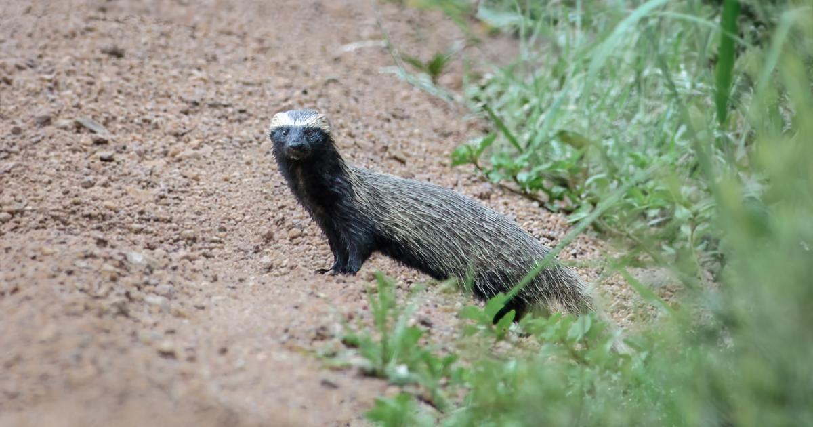
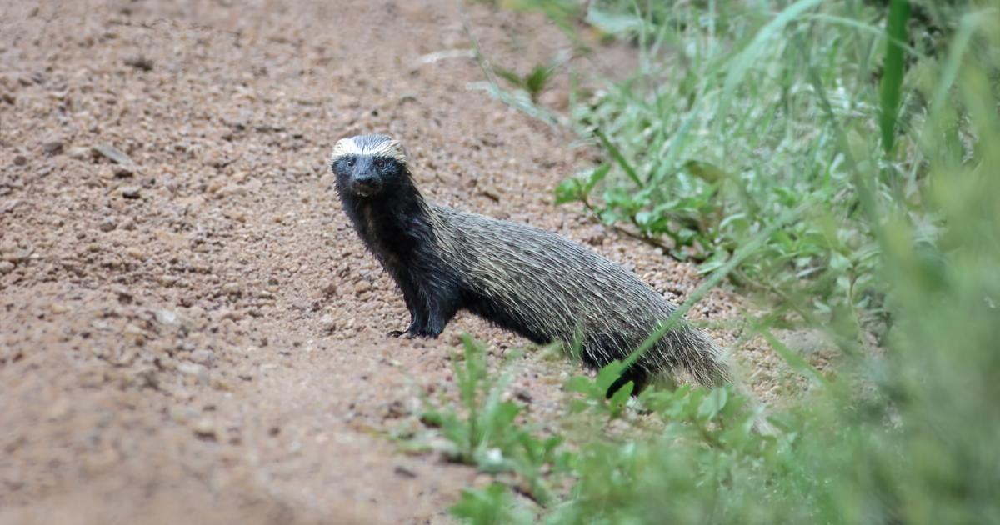

Nomes Populares: Conhecido também como "furão pequeno" e "furão de cabeça curta"
Classificação Biológica
Domínio: Eukaryota
Reino: Animalia
Filo: Chordata
Classe: Mammalia
Ordem: Carnivora
Família: Mustelidae
Gênero: Galictis
Espécie: G. cuja
Nutrição Geral e Hábitos Alimentares
Tipo de Nutrição: Heterotrófico
O furão pequeno é um carnívoro oportunista que se alimenta principalmente de pequenos mamíferos, aves, insetos e, ocasionalmente, de ovos. Sua dieta é variada e pode incluir também frutas e insetos, dependendo da disponibilidade de recursos em seu habitat.
Morfologia
Pelagem e Corpo A pelagem do furão pequeno é densa e pode variar de marrom a cinza, com algumas variações regionais. O corpo é esguio e alongado, com pernas curtas e uma cauda relativamente longa. Possui uma cabeça pequena com orelhas redondas e olhos pequenos, bem adaptados para sua vida noturna e caça em densos ambientes florestais. Órgãos Respiratórios O aparelho respiratório do furão pequeno inclui narinas, fossas nasais, cavidade nasal, seios paranasais, faringe, laringe, traqueia e pulmões. A laringe é pequena e a traqueia é relativamente curta. Os pulmões estão localizados na cavidade torácica e são menos lobados comparados a outros carnívoros. Patas As patas são adaptadas para escavação e têm garras afiadas. As patas anteriores possuem cinco dedos e as posteriores quatro.
Comportamento
Os furões pequenos são animais solitários e territoriais. Eles são muito ágeis e possuem um comportamento ativo, principalmente ao amanhecer e ao entardecer. São conhecidos por suas habilidades de escalada e natação, e frequentemente utilizam esses talentos para escapar de predadores e explorar seu território. São também conhecidos por suas vocalizações variadas, que usam para comunicação.
Ocorrência
O furão pequeno é encontrado em áreas florestais e arbustivas da América do Sul, especialmente na Argentina, Brasil, Paraguai e Uruguai. Prefere habitats de vegetação densa e áreas de bosque, onde pode encontrar abrigo e alimento.
Mapa de Ocorrência
Reprodução
Sistema de Acasalamento: O furão pequeno apresenta um sistema de acasalamento solitário, com encontros sexuais apenas durante a época de reprodução. Reprodução ao Longo do Ano: A reprodução ocorre na primavera e início do verão. Gestação: A gestação dura cerca de 50 a 60 dias. Ninhadas: As fêmeas podem dar à luz de dois a seis filhotes por ninhada. Os filhotes nascem cegos e dependem da mãe para alimentação e cuidados até estarem mais independentes.
 
